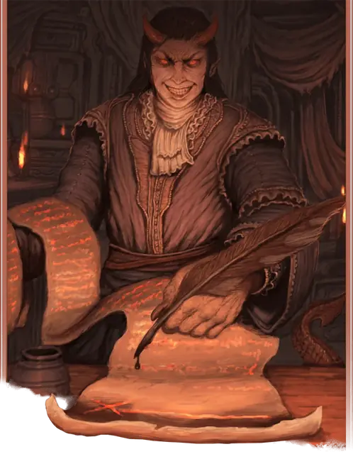

Дьявол-собиратель (фальксугон)
Harvester Devil
Среднее Исчадие (Дьявол), Принципиальное Злое

Класс Защиты 14 Инициатива +3 (13)
Хиты 65 (10к8 + 20)
Скорость 30 футов
| мод | спас | ||
|---|---|---|---|
| СИЛ | 12 | +1 | +1 |
| ЛОВ | 17 | +3 | +3 |
| ТЕЛ | 14 | +2 | +4 |
| мод | спас | ||
|---|---|---|---|
| ИНТ | 14 | +2 | +2 |
| МДР | 13 | +1 | +3 |
| ХАР | 19 | +4 | +4 |
Сопротивление урону Холод
Иммунитеты Огонь, Яд; Отравленный, Очарованный
Чувства Тёмное зрение 120 футов (игнорирует магическую Темноту), пассивное Восприятие 13
Языки Общий, Инфернальный, Телепатия 120 фт.
Опасность 3 (700 опыта; БВ +2)
Особенности
Дьявольский оберег. Броски атаки против дьявола совершаются с Помехой. Если дьявол совершает бросок атаки, эта особенность перестаёт работать до начала его следующего хода.
Восстановление дьявола. Когда дьявол умирает за пределами Девяти Преисподних, его тело превращается в сернистое облако и в тот же миг заново возрождается со всеми Хитами где-то в Девяти Преисподних.
Сопротивление магии. Дьявол совершает с Преимуществом спасброски от заклинаний и прочих магических эффектов.
Действия
Мультиатака. Дьявол совершает две атаки Адским клинком или Дизориентирующим лучом в любой комбинации.
Адский клинок. Бросок рукопашной атаки: +5, досягаемость 5 фт. Попадание: 6 (1к6 + 3) Рубящего урона плюс 7 (2к6) урона Огнём.
Дизориентирующий луч. Бросок дальнобойной атаки: +5, дистанция 120 фт. Попадание: 13 (2к12) Психического урона. Если цель — существо, оно не может совершать Провоцированных атак до начала следующего хода дьявола.
Принуждающий договор (1/день). Спасбросок Харизмы: Сл 14, одно существо в пределах 30 футов от дьявола. Провал: Цель получает состояние Очарованный. Пока у неё есть состояние Очарованный, у неё есть также состояние Ошеломлённый, но она может говорить. Если цель соглашается принять договор дьявола, эффект оканчивается. В противном случае она повторяет спасбросок каждый раз, когда получает урон, или в конце каждого своего хода, оканчивая эффект на себе при успехе. Спустя 1 минуту она преуспевает в спасброске автоматически.
Бонус мастерства +2
Среда обитания Девять преисподних
Сокровища Инструментальные
Дьявол-собиратель
Дьявол коварства и искушения
Название этих дьяволов намекает на их умение собирать души для Девяти Преисподних; дьяволы-собиратели — сладкоречивые создания, напоминающие тифлингов, а в иерархии Ада их также называют фальксугонами.
Дьяволы-собиратели щеголяют короткими рогами и выразительными хвостами и зачастую наряжаются в изысканные одежды. Они сулят богатство или влияние падким на соблазны смертным и часто закрепляют сделку контрактом, возникающим во вспышке серного пламени. Такой контракт привязывает душу подписавшего его смертного к Девяти Преисподним.
Контракты дьяволов-собирателей длинны и запутанны, но сами они заключают сделки быстро и порой оставляют лазейки, способные спасти душу подписавшего. Совершите бросок по таблице «Лазейки в контракте» для вдохновения или придумайте сами уловку, которую может заметить проницательный читатель.
Лазейки в контракте
| к6 | Контракт аннулируется, если подписавший… |
| 1 | Доставит Мефистофелю девяносто девять других душ. |
| 2 | Окажется под светом полной луны и полумесяца одновременно. |
| 3 | Отречётся от контракта, находясь в Бездне. |
| 4 | Находится под защитой другого исчадия. |
| 5 | Имеет идентичного близнеца или клона. |
| 6 | Обманом заставит дьявола подписать любой другой контракт. |